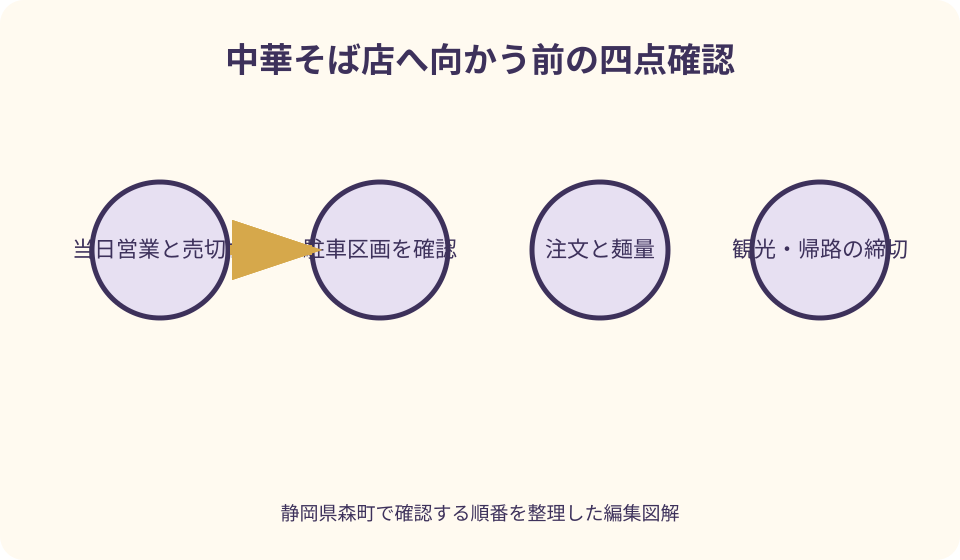
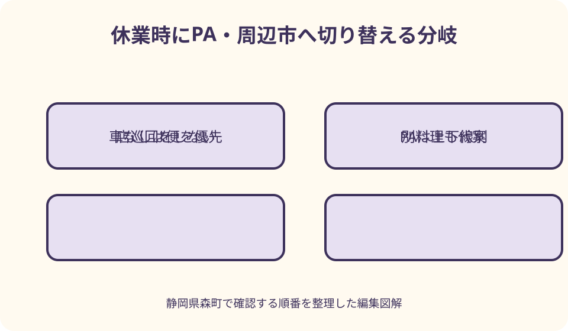

森町グルメ・ラーメン｜最終確認 2026-08-10
静岡県森町のラーメン・中華そば｜営業と売切れを確認する食事案内
静岡県森町でラーメンを探す時、店名を数多く並べても、訪問日に食べられるかは分かりません。森町観光協会には中華そばあずさの住所、営業時間、駐車場、公式SNSへの導線が掲載されていますが、営業、価格、メニュー、売切れを将来まで保証する情報ではありません。必要なのは、今から向かえるか、駐車位置を確認できるか、同行者が食べられる材料と量か、観光や帰りの便に間に合うかを一つずつ確かめることです。休業なら店を巡回せず、進行方向に合う遠州森町PAまたは周辺市へ早く切り替えます。

町内候補は数より今日食べられる一店を確認する
ラーメン店の一覧を長く作る前に、訪問する時間帯と地域を決めます。町なか、飯田地区、小國神社方面、アクティ森方面では移動が異なります。観光経路から離れた店を数だけで追加しません。
第一候補には、当日営業を確認できる情報があり、駐車または公共交通、同行者の食事条件が合う店を置きます。第二候補は帰路上に一つだけ持ち、現地で連続して店を探しません。
ラーメンを主目的にする日と、観光途中の昼食にする日を分けます。主目的なら営業時間へ合わせ、観光途中なら売切れや列で予定を崩さないよう、食事を外せる代案を持ちます。
店の評価点、口コミ件数、写真の見た目を順位へ変換しません。訪問日、人数、子ども、アレルギー、駐車、帰る時刻という自分の条件へ合うかで選びます。
本記事は筆者が各店の味を食べ比べたランキングではありません。2026年8月10日に確認した森町、観光協会、店舗公式SNS、NEXCO中日本の案内を基に、確認手順をまとめています。
中華そばあずさは観光協会掲載から最新発信へ進む
森町観光協会は中華そばあずさを飯田地区のラーメン店として掲載し、鶏だし醤油と豚骨醤油などの紹介、住所、電話、営業時間、駐車場、SNSへのリンクを示しています。
掲載された料理名は候補を知る材料で、訪問日の販売確約ではありません。スープ、麺、トッピング、限定品は変わり得ます。店の最新SNSと当日の表示を確認します。
観光協会ページに昼と夕方以降の時間帯が掲載されていても、仕込み休憩、臨時休業、売切れ、受付終了が同じとは限りません。遠方から向かう場合は電話または公式発信で確かめます。
駐車場について店前と別区画の掲載があります。台数だけで場所を推測せず、現地案内を読み、別区画の入口が分からなければ店へ尋ねます。近隣へ無断駐車しません。
公式SNSを見る際は、固定された古い投稿より最新の日付を確認します。臨時案内が見つからないことを通常営業の保証にせず、重要な食事なら店舗へ直接連絡します。
営業・売切れ・列は出発前と到着時に二度見る
出発前には営業日、昼夜の時間、臨時休業、売切れ案内を見ます。到着時には入口の営業札、列の最後、受付終了を改めて確認します。情報が異なる場合は現地の案内を優先します。
営業時間内でも、スープや麺がなくなれば早く終了する可能性があります。売切れ時刻を過去の投稿から予測して急いで運転せず、間に合わない可能性を含めて第二候補を決めます。
列がある場合、食券や記名を先に行うか、車内待機が可能か、全員そろって並ぶ必要があるかを店員へ尋ねます。独自判断で荷物だけを置いて順番を取りません。
観光の予約時刻や帰りの便がある人は、待てる期限を列へ入る前に決めます。その時刻を越える見込みなら店へ確認し、食事を別の場所または後へ変えます。
売切れを知った後、同じ店の写真を見ながら長く待っても商品は戻りません。最新の再開案内がなければ、次回の候補として記録し、その日の安全な食事へ移ります。
駐車は店前・別区画・退出方向まで確認する
駐車場へ入る前に、入口、満車表示、歩行者、自転車を見ます。空き区画を探しながら急に曲がらず、店前が満車なら別区画の案内に従います。
別駐車場は、道路を横断するか、夜に照明があるか、子どもを安全に歩かせられるかを確認します。大人一人が先に場所を確かめ、子どもだけを店前で待たせません。
駐車枠が狭い時は、ドアを大きく開けるチャイルドシートや高齢者の乗降も考えます。無理に停めて隣車へ近づけず、別の安全な区画を店へ相談します。
食後に小國神社やアクティ森へ向かうなら、駐車場から出る方向も地図で確認します。店舗敷地で転回を繰り返さず、案内された出口と道路標識に従います。
店が混雑しているからといって、路上、歩道、近隣店舗、住宅前へ停めません。駐車できなければ待機方法を店へ尋ね、案内がなければ別候補へ移ります。
注文方法は入口で確認し追加を急がない
入店したら、食券、口頭注文、席での注文のどれかを確認します。写真を撮りながら入口を塞がず、人数と子ども用の席を店員へ伝えてから注文へ進みます。
券売機がある場合、売切れ表示、現金、紙幣、キャッシュレス、領収書を確認します。支払方法を観光協会ページから推測せず、小銭の両替を店が必ず行えるとも考えません。
醤油、豚骨醤油などの名称だけで、濃さ、香り、脂、塩分を断定しません。好みや食事制限がある場合、変更できる項目だけを店へ尋ね、掲載されていない特別対応を求めません。
麺の硬さ、量、トッピング、辛味などを選べるかは、その日の注文案内に従います。一般的なラーメン店の習慣を持ち込まず、店が示していない言葉で注文しません。
サイドメニューを最初から人数分頼まず、麺量を確認してから追加します。混雑時に食べ残しを包んでもらえると仮定せず、食べ切れる量を注文します。

量は麺・スープ・追加品を別々に考える
一杯の量は写真だけでは分かりません。麺量の目安、大盛や少なめの可否、トッピングの量を注文前に尋ねます。成人、子ども、高齢者へ同じ一杯を割り当てません。
スープをすべて飲むことを完食の条件にしません。体調や食事制限に合わせ、無理に飲み切らず、容器や残し方について店の案内に従います。
観光前に満腹になると歩行や体験が負担になる場合があります。小國神社で長く歩く、アクティ森で体験する日は、追加のご飯や揚げ物を後から判断します。
観光後は空腹が強くても、注文を一度に増やしません。まず一杯と水分を取り、食べられる状態を見ます。閉店前だからと急いで大量注文しないことも大切です。
複数人で取り分ける場合、店の器とレンゲを確認し、直接丼を回しません。アレルギーや感染症の心配がある家庭は、共有せず個別に食べられる量を相談します。
子連れは熱い丼・椅子・待ち時間を先に見る
ラーメンは丼、スープ、麺が熱い可能性があります。子どもの手が届く位置へ置かず、大人が温度を確認します。カウンターやテーブルの縁に丼を寄せません。
子ども椅子、ベルト、ベビーカーの置き場、座敷の有無は観光協会掲載から確定できません。必要な家族は来店前に店へ尋ね、通路をふさがない案内に従います。
子ども向けメニューがあるとしても、辛味、ねぎ、硬さ、量、アレルゲンが自分の子に合うとは限りません。注文時に調整できる範囲を確認します。
列が長い時は、子どもを車内へ一人で残しません。大人が交代で待てるか、全員がそろう必要があるかを店へ聞き、難しければ混雑の少ない時間または別日に変えます。
食後すぐの長距離移動で子どもが気分を悪くすることも考え、車へ乗る前に休憩します。参拝や公園遊びを追加せず、体調が悪ければ帰宅を優先します。
アレルギーはスープ・麺・たれ・共用器具まで聞く
ラーメンは、スープ、麺、かえし、油、具材に複数の材料を含む可能性があります。料理名から小麦、卵、乳、魚介、大豆などの有無を推測せず、対象を具体的に伝えます。
麺だけ変更できても、ゆで湯、トング、調理台、器が共用の場合があります。微量混入を避ける必要がある人は、工程まで店へ尋ね、対応できない時は食べません。
トッピングを抜けば安全になるとは限りません。スープやたれへ既に含まれる場合があります。店員が確認できる表示や担当者の説明を待ち、列の圧力で返答を急がせません。
子どもの薬と緊急連絡先は車に置かず、保護者が持ちます。同行者全員が対象食材と症状時の行動を知り、別の丼から味見させません。
対応が難しい場合は、アレルゲン表示を確認できる別の飲食店や密封品へ切り替えます。空腹や観光予定を理由に「少しなら」と自己判断しません。
観光前後は移動ではなく食後の余白で決める
小國神社へ行く前に食べるなら、参拝開始を遅らせてもよい日だけにします。列や提供待ちが長ければ宮川散策を外し、参拝自体を急がないようにします。
小國神社の後に向かう場合、紅葉期や正月の渋滞を通常の移動時間へ当てはめません。店の受付終了へ間に合わない見込みなら、出発前に代案を選びます。
アクティ森の体験前は、受付時刻と食後の運動を考えます。ラーメン店への寄り道で体験予約へ遅れないよう、食事を施設内または終了後へ変える判断を持ちます。
アクティ森の後は、施設の閉場時刻と店の営業を別に確認します。疲労が強ければ町内を遠回りせず、帰路上の食事場所へ変更します。
花めぐりや町なか散策の日も、撮影、駐車、トイレで時間が延びます。食事を最後の固定予定にせず、営業確認が取れなければ観光地から直接帰路へ入ります。
車なしは食事後の駅・バス停までを先に確認する
森町公式の公共交通案内で、天竜浜名湖鉄道、民間路線バス、町営バスなどを確認します。店の最寄り交通を地図で見ても、希望時間に便があるとは限りません。
帰りの列車やバスを先に選び、店を出る締切を決めます。列がその締切へ近づいたら食事を諦め、次の便があると推測して待ち続けません。
駅や停留所までの経路は、歩道、信号、夜間照明、雨を含めて確認します。直線距離が短くても、安全な徒歩経路が分からない場合はタクシーの配車可否を事前に尋ねます。
大きな荷物を持つ旅行者は、店内の置き場所があると仮定しません。通路をふさぐ荷物なら駅の設備を調べるか、食事場所を駅周辺へ変更します。
車なしでPAを代案にする時は、ぷらっとパークへ公共交通で簡単に行けるとは考えません。一般道側の入口、徒歩経路、開閉、帰りの手段が確認できなければ利用しません。
休業時はPA下りも方向と麺の種類を確認する
NEXCO中日本は遠州森町PA下りに遠州製麺所を掲載していますが、ラーメン専門店と同じ選択肢とは限りません。公式掲載の麺料理、営業時間、売切れを当日確認します。
PA上りと下りでは店舗が違います。下りの店舗情報を上り走行中に使わず、食事のための危険な転回や不必要な高速出入りをしません。自分の進行方向に合う施設だけを見ます。
一般道からぷらっとパークを使う場合、開閉時間、駐車、店舗営業を別々に確認します。フードコートが開いていても一般道入口へ入れる時間が同じとは限りません。
PAの麺料理も、材料、量、子ども用器、アレルゲンを現地で確認します。券売機や注文口で売切れが分かったら、別の麺に固執せず食べられる定食などへ変えます。
町内店が休業した時、PAへ向かうより袋井や掛川など帰路の店が近い場合もあります。高速料金、移動、帰宅時刻を比べ、確実に営業を確認できる一か所を選びます。

良い点：一店を確認すれば観光との組合せを判断できる
森町観光協会に中華そば店の所在地、駐車、SNSへの入口があることは、候補を絞る助けになります。網羅的なランキングを作らず、一店の最新状況へ進めます。
昼と夕方以降の掲載がある候補なら、観光の前後を検討できます。ただし、両時間帯が毎日同じ条件で営業する保証ではありません。最新発信と店頭案内を確認する条件が付きます。
車利用では店の駐車情報、車なしでは町の公共交通、休業時にはNEXCO中日本のPA情報と、当事者資料を使い分けられます。情報源の役割が明確です。
ラーメンは一品で食事を組みやすい一方、量、熱さ、材料が同行者に合うか確認が必要です。追加注文を後へ回せるため、食べ残しを減らす選び方ができます。
観光を主目的にした日は、食事を外しても旅を完了できます。中華そばを主目的にした日は、営業に合わせて観光を短くできます。優先順位を一つにできる点が実用的です。
注文したい点：当日営業と交通を一画面で確認したい
観光協会の店舗ページから最新SNS、電話、地図、駐車場へ迷わず進み、最終更新日が分かると便利です。営業時間は転載だけでなく当日確認が必要と明示したいところです。
店舗の発信には、臨時休業、昼夜の受付、売切れ、限定品の終了を日付付きでまとめると、遠方からの訪問者が判断しやすくなります。価格や在庫を長期保証する必要はありません。
駐車場は店前と別区画の位置、入口、満車時の対応を図で示せると、近隣への誤駐車を減らせます。夜間や子連れの歩行経路も分かると安心です。
子ども椅子、取分け器、アレルギー相談、麺量、注文方式など、来店前に聞く項目が公式案内にあると、混雑した入口での確認を短くできます。
公共交通利用者には、最寄り駅・停留所からの安全な経路と運行元へのリンクが必要です。PA代案は上下線と一般道入口を明確に分け、町内店と混同しない表示が望まれます。
代案・結論：営業・駐車・注文・帰路を四点確認する
出発前に、当日営業と売切れ情報、駐車位置、注文方法、帰りの時刻を確認します。子どもやアレルギーがあれば、席、熱さ、材料、共用工程も店へ尋ねます。
到着後は、営業札、列、受付終了、駐車案内を見ます。情報が変わっていたら、待てる期限を決め、無断駐車や急な予定変更で観光を圧迫しません。
注文は一人一杯を機械的に選ばず、麺量と取分け可否を確認します。追加品は食べられる見込みを見て後から選び、閉店間際でも大量に頼みません。
休業や売切れなら、PA下りを含む代案の方向と営業を確認します。上下線が合わない、公共交通で行けない場合は、帰路上の周辺市または別の料理へ変えます。
結論は、森町のラーメン探しを店数や順位で完成させないことです。一店の営業、駐車、注文、帰路がそろえば向かい、どれかが不明なら次回または安全な代案にします。
大石の視点：食事記録は営業より家族の条件を残す
私（大石）は、地域の店を紹介する時、味を一言で決めず、家族がそこへ安全に行ける条件を見ます。駐車、子どもの席、帰りの便が合わなければ、評判だけで勧めません。
帰宅後は、訪問日、確認した公式発信、駐車区画、注文方法、待てた時間、子どもが食べた量、材料確認を記録します。同じ営業や価格が続くとは考えず、再確認欄を付けます。
高齢者と行く日は、丼を持てる席、入口の段差、駐車からの距離、麺量を確認します。若い人の食べ切れる量や歩行速度へ合わせず、食事後の休憩も予定に入れます。
実家や土地の確認日に寄る場合、草刈りや片付け後の疲労を見ます。作業が長引いて売切れへ急ぐのではなく、戸締りと道路を確認し、食事は帰路の確実な店へ変更します。
この記事の情報確認日は2026年8月10日です。営業、価格、メニュー、売切れ、駐車、交通、PAは変更される場合があります。訪問日は店舗と各運行元の公式案内を確認し、不明なまま遠方から急いで向かわないでください。
公式情報・確認先
掲載内容は次の一次情報を基礎に整理しました。営業、料金、催し、交通は変わるため、出発前または手続き前にリンク先で最新情報を確認してください。
- 観光（静岡県森町、2026-08-10確認）
- 観光パンフレット（静岡県森町、2026-08-10確認）
- 森町の公共交通について（静岡県森町、2026-08-10確認）
- 中華そば あずさ（森町観光協会、2026-08-10確認）
- 中華そば あずさ Instagram（中華そば あずさ、2026-08-10確認）
- 遠州製麺所 店舗情報（NEXCO中日本、2026-08-10確認）
- 遠州森町PA 下り 施設・サービス案内（NEXCO中日本、2026-08-10確認）